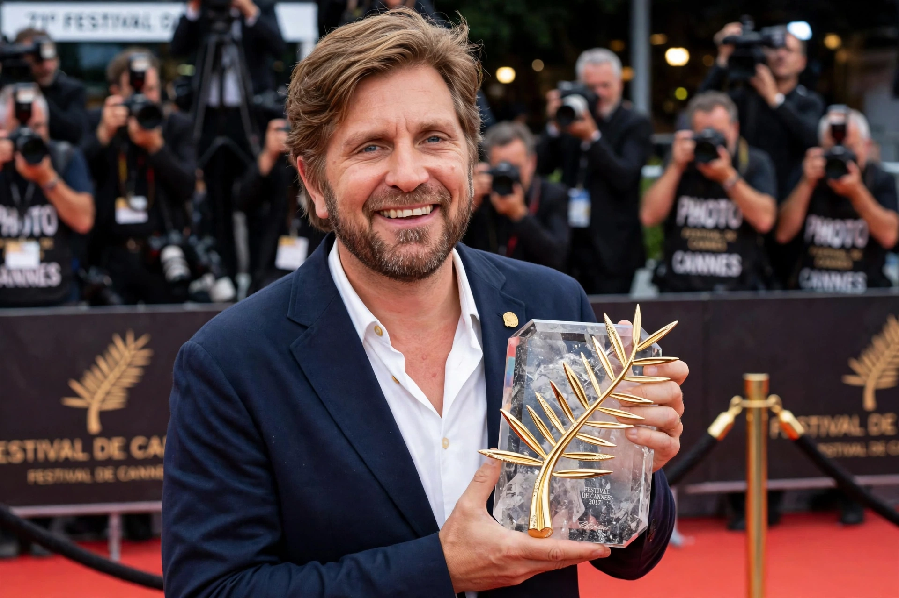

Swedish filmmaker (born 1974)
| Ruben Östlund | |
|---|---|
 Östlund, two-time Palme d'Or winner | |
| Born | 13 April 1974, Styrsö, Gothenburg, Sweden |
| Occupation | Film director, screenwriter, editor |
| Years active | 1993–present |
| Notable work | Force Majeure, The Square, Triangle of Sadness |
Ruben Östlund (born 13 April 1974) is a Swedish filmmaker. Known for satirical, discomfort-driven dramas that dissect social norms, masculinity, and the art world, he is one of the few directors to win the Palme d'Or at the Cannes Film Festival twice. His films favour long, static takes and meticulously staged scenes of social embarrassment.
Östlund was born on the island of Styrsö off Gothenburg. He began his career making skiing films in the 1990s before studying at the Gothenburg Film School. His features The Guitar Mongoloid (2004), Involuntary (2008), and Play (2011) built his reputation; the short Incident by a Bank (2010) won the Golden Bear for Best Short Film at Berlin.
Force Majeure (2014), about a husband who flees an avalanche ahead of his family, won the Jury Prize in Un Certain Regard at Cannes and became an international breakthrough. The Square (2017), a satire of the contemporary art world starring Claes Bang and Elisabeth Moss, won the Palme d'Or. Triangle of Sadness (2022), a satire of wealth and fashion set aboard a luxury yacht, won him a second Palme d'Or and received Academy Award nominations for Best Picture, Best Director, and Best Original Screenplay.
Östlund describes his aim as examining human behaviour "from a sociological perspective". His films use extended, unbroken shots that force the viewer to sit with awkward situations, and he frequently remakes scenes dozens of times to capture naturalistic reactions. He has cited YouTube clips of real social incidents as a key inspiration.